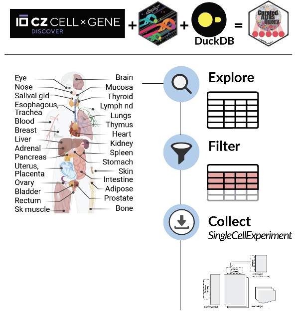
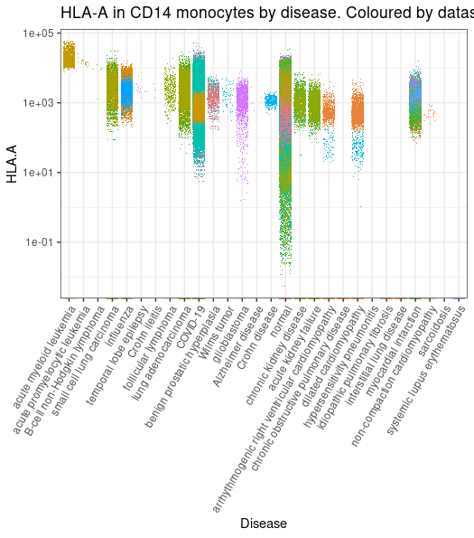

CuratedAtlasQueryR is a new package that enables easy programmatic exploration of CELLxGENE single-cell human cell atlas data.
Package
Authors
Maria Doyle
Stefano Mangiola
Published
February 23, 2023
This blog post was co-written by the Bioconductor Community Manager, Maria Doyle, and the lead developer of CuratedAtlasQueryR, Stefano Mangiola.
We are excited to announce the launch of the CuratedAtlasQueryR package! Millions of cells are now at your fingertips as the harmonized and reannotated CELLxGENE single-cell human atlas can be explored and retrieved in Bioconductor SingleCellExperiment data structure.

Why this package was created
The Human Cell Atlas is a large-scale single-cell sequencing initiative that aims to map every cell type in the human body. It has the potential to revolutionise our understanding of human cellular biology and the immune system. Data harmonisation, curation and effective data query are essential to extract knowledge from these complex atlases. The CELLxGENE human cell atlas provides an explorable and searchable human atlas. However, CELLxGENE is not harmonised across datasets.
To allow exploration and analyses across datasets, tissues and diseases through R, we have developed CuratedAtlasQueryR, a cell-resolved query system that allows researchers to select cells based on their type, tissue of origin, and demographics. This package will be submitted to Bioconductor. We have also created a Python version of CuratedAtlasQueryR that will be launched soon.
How it differs from existing packages
We use the existing Bioconductor package, cellxgenedp as the download source for datasets included in CELLxGENE.
We then harmonised, curated and reannotated the data (immune cell labels).
The column classes so they can be represented as a unique table.
We subset the columns that were most common across the atlas (the complete columns for a specific dataset can be retrieved through the cellxgenedp package).
We consolidated sample identifiers.
We harmonised tissue labels.
We harmonised cell-type labels under a common ontology.
We provide a consensus-based immune cell label, and a confidence label. Consensus was established among the original annotation and three independent references (Monaco, BLUEPRINT, and Azimuth PBMC).
We introduced custom columns, not present in the original CELLxGENE metadata.
tissue_harmonised: a coarser tissue name for better filtering
age_days: the number of days corresponding to the age
cell_type_harmonised: the consensus call identity (for immune cells) using the original and three novel annotations using Seurat Azimuth and SingleR
confidence_class: an ordinal class of how confident cell_type_harmonised is. 1 is complete consensus, 2 is three out of four and so on.
cell_annotation_blueprint_singler: SingleR cell annotation using Blueprint reference
cell_annotation_blueprint_monaco: SingleR cell annotation using Monaco reference
sample_id_db: Sample subdivision for internal use
file_id_db: File subdivision for internal use
.sample: Sample ID
.sample_name: How samples were defined
Differently from cellxgenedp, we can query specific cells across datasets based on annotation, the metadata exploration and data download is done on-disk without loading into memory.
The harmonized and reannotated CELLxGENE single cell human atlas can be explored and retrieved in Bioconductor SingleCellExperiment format.
We use DuckDB in the package due to it’s speed, and low disk imprint in handling large amounts of data.
How you can use it
Step 1: Get started with CuratedAtlasQueryR by exploring the integrated metadata of 28 million cells (on-disk) using tidyverse. The atlas includes 344 studies across 40 tissues, providing raw abundances and counts-per-million. 📊
library(CuratedAtlasQueryR)cache_dir ="~/tmp"# specify the cache directory if you don't want to use defaultmetadata <-get_metadata(cache_directory = cache_dir)metadata
Step 2: Filter cells of interest using tidyverse, whether it’s a specific dataset or a cell type across tissues and diseases. CuratedAtlasQueryR makes it easy to find what you’re looking for! 🔍
Step 3: Collect the SingleCellExperiment for the cells of interest. Our object uses HDF5 format to keep the R session light, making it easier to work with larger datasets. 💻
Step 4: With CuratedAtlasQueryR and tidySingleCellExperiment, checking the transcription abundance of your favourite gene and cell type across diseases, tissues and hundreds of datasets is just a few lines of code! 🎉
library(tidySingleCellExperiment)library(ggplot2)metadata |># Filter and subsetfilter(cell_type_harmonised=="cd14 mono") |># Get counts per million for NCAM1 geneget_SingleCellExperiment(assays ="cpm", features ="HLA-A", cache_directory = cache_dir) |># Plot (styling code is omitted)join_features("HLA-A", shape ="wide") |>ggplot(aes( disease, `HLA.A`,color = file_id)) +geom_jitter(shape=".")

metadata |># Filter and subsetfilter(cell_type_harmonised=="nk") |># Get counts per million for NCAM1 gene get_SingleCellExperiment(assays ="cpm", features ="NCAM1", cache_directory = cache_dir) |># Plot (styling code is omitted)join_features("NCAM1", shape ="wide") |>ggplot(aes( tissue_harmonised, NCAM1,color = file_id)) +geom_jitter(shape=".")
Thanks to funders CZI Silicon Valley Foundation (CZF2019-002443), NIH NHGRI (5U24HG004059-18), Victoria Cancer Agency (ECRF21036), NHMRC (1116955), The Lorenzo and Pamela Galli Medical Research Trust.